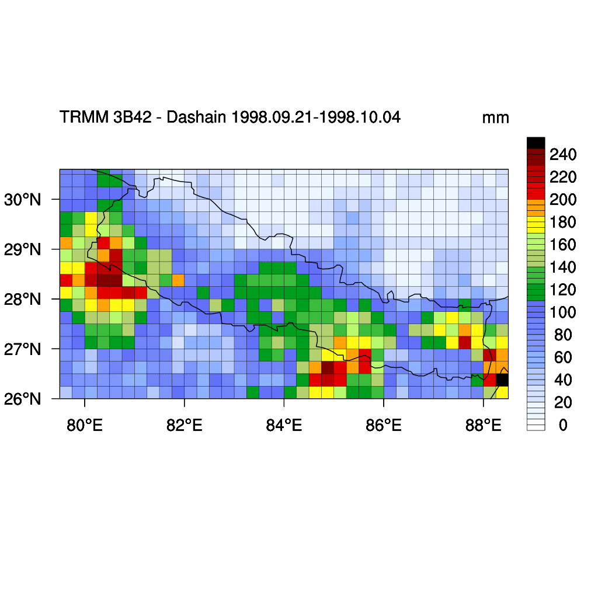

Mar 2019 ,
Prabhakar Shrestha
Happy Dashain, but rainy Dashain ?
2015-11-08
Tweet

We always think of Dashain as a warm and sunny period, with gentle breeze to fly kites. But some years, it has been rainy also: yes, really a rainy Dashain. Thanks to TRMM (Tropical Rainfall Measurement Mission) which just got replaced by GPM (Global Precipiation Measurement), we have good record of spatial distribution of precipitation over Nepal as well. This data is available for free download using the NASA Giovanni portal. Here, I have used the TRMM 3B42 gridded daily rainfall data to generate the accumulated rainfall over Dashain festival from 1998 to 2014 over the region (26.125 N-30.625 N, 79.625 E-88.375 E). For the given time-span, the Wet Dashain mostly span from the eastern to central part of Nepal, due to cyclones from south-east. We will have more data in future to fully understand the climatology of rainfall over Dashain, till then ... 1998 Wet Dashain 1999 Wet Dashain (Eastern Nepal) 2000 Normal Dashain 2001 Normal Dashain 2002 Partially wet Dashain 2003 Wet Dashain (Central and Eastern Nepal) 2004 Partially wet Dashain 2005 Partially wet Dashain 2006 Wet Dashain (Central and Eastern Nepal) 2007 Partially wet Dashain 2008 Partially wet Dashain 2009 Partially wet Dashain 2010 Partially wet Dashain 2011 Normal Dashain 2012 Normal Dashain 2013 Wet Dashain 2014 Partially wet Dashain